The Video Record (so far...)
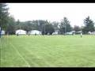 FC77 Club Pitch
FC77 Club Pitch
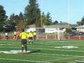 FC77 Teams on June 13, 2007
FC77 Teams on June 13, 2007
The August 5, 2006 Athletic Cup Participants and Families.
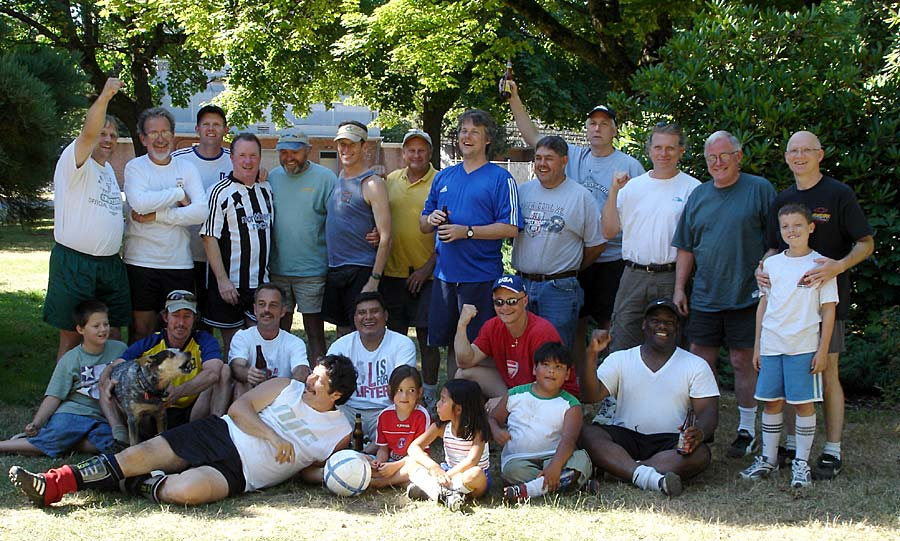
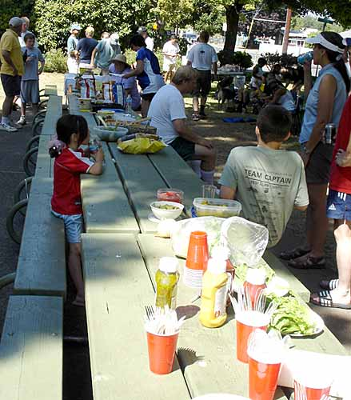
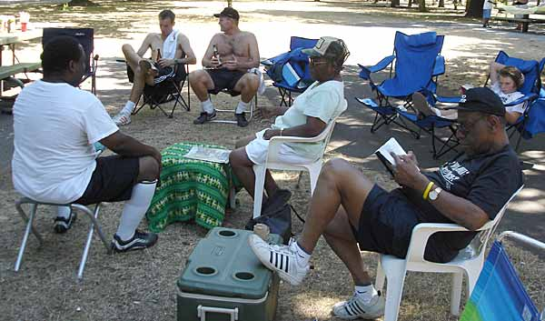
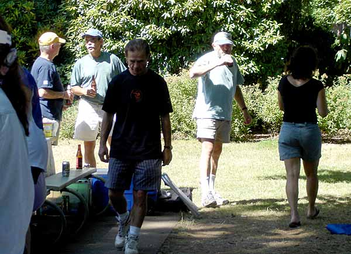
Some of the August 14, 2005 Athletic Cup participants.
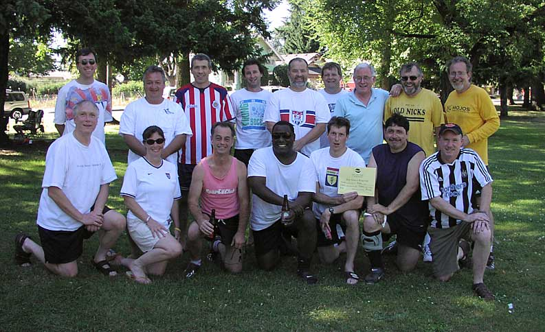
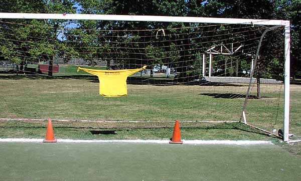 |
|
For the '05 Athletic Cup, the
keeper quality was of the highest level. |
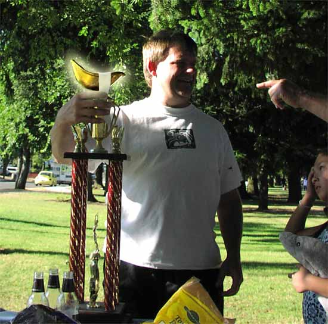 |
Jack Hevel poses with the revered trophy which glows in the late summer sunlight. Note club president Calder's careful adhesive tape mounting of the actual cup. |
July 27, 2003 Athletic Cup Participants.
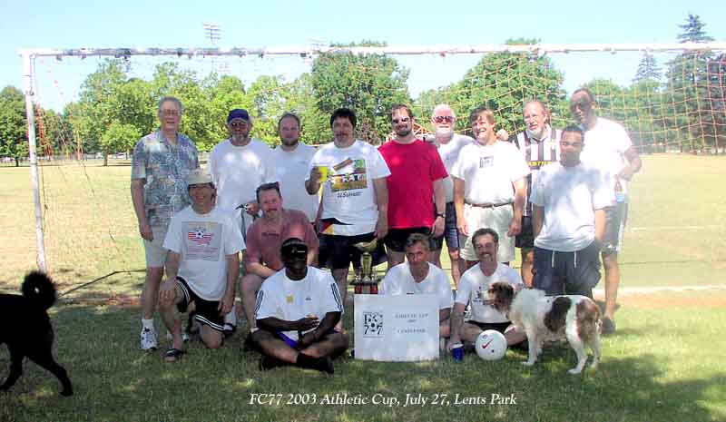
Action and Activity From The 2003 Athletic Cup, 7/27/2003. |
|
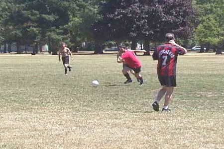 To the amazement of the other players, two scrapping opponents move in perfect synchrony across the pitch. |
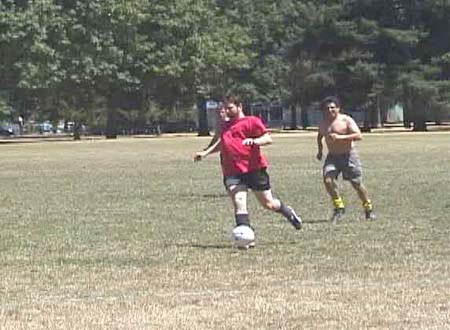 John Mantey bores in on goal (we think). |
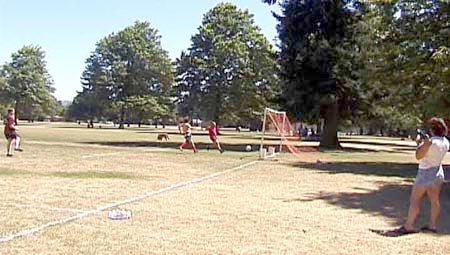 Yet another goal threatens to burst the net. |
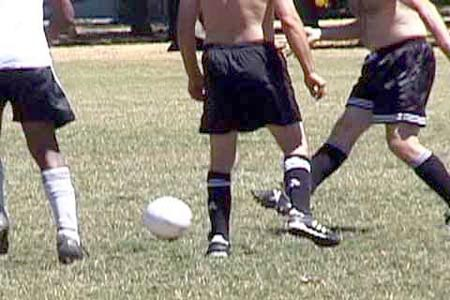 It was a real SPF 30 kind of day - shirts optional. |
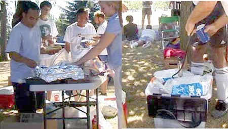 Hot & greasy, or cold & foamy - no health food here! |
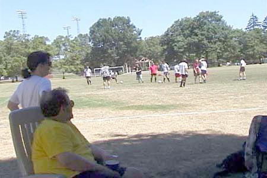 The smarter Cup attendees snagged the good shade spots early on. |
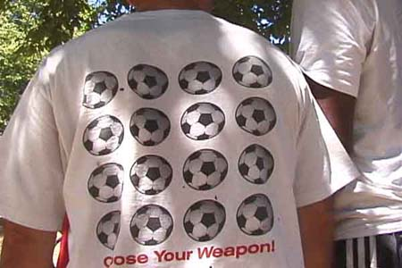 Some Club members positively brimmed over with soccer hostility. Fortunately, this individual
soon self-medicated himself into a mellow stupor. |
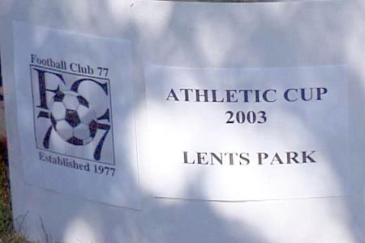 Just as it ever was... Attendance was as hit & miss as the first team |
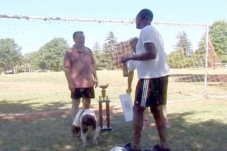 Here you can get a brief glimpse of the fabled trophy, hand-gilded by your club president. During the party, minor damage was done to the cup atop the trophy by unknown soccer hooligans. |
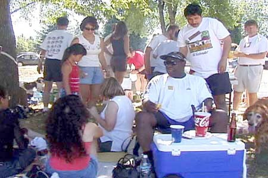 AJ keeps a critical (yet satisfied) eye on the proceedings. |
FOUNDING FATHER TURNS 50
March 9th, 2003.
Madison's Bar & Grill was the scene for a celebration of Mike Calder's 50th birthday. He now joins the other two "founding fathers" of FC77 at this rarified age bracket. The evening was marked by the usual cruel lampooning of Mike's age and stage, but no one was ejected from the affair and Mike never once burst into tears.
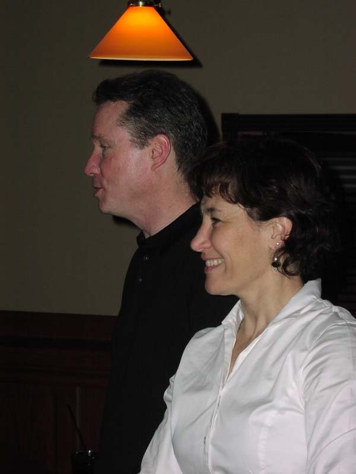
Mike and Maryann look on, bemused at the antics of their soccer buddies.
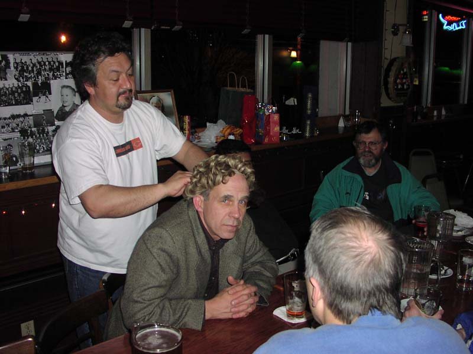
Russell makes use of half-forgotten hairdressing skills acquired somewhere in his murky past.
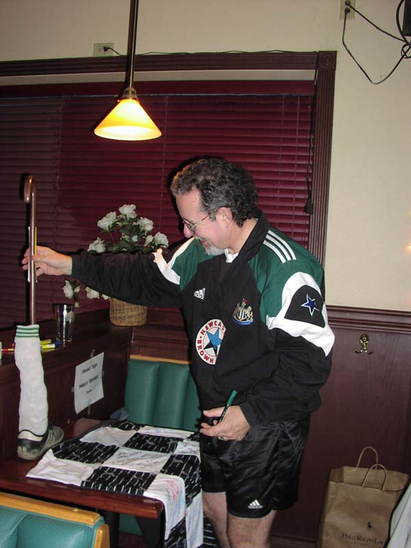
David Porter looks enviously at the highly
practical gift the Club presented to Mike.
One concern is that Mike will
have to equip it with a shinguard to satisfy the current crop of referees.
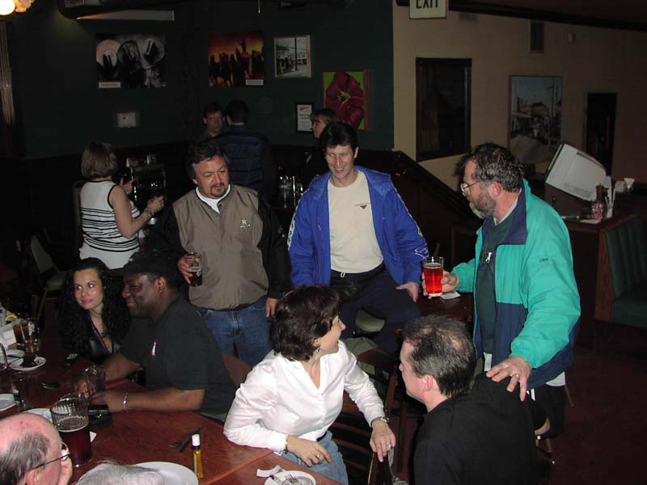
All listen carefully as Al makes another of his pithy observations about life, soccer and/or the institution of marriage.